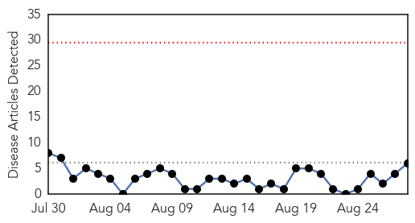
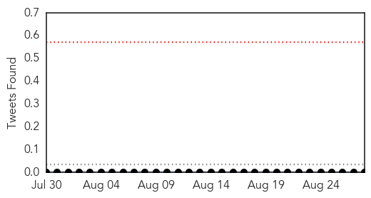
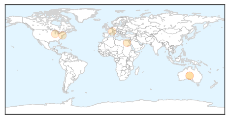
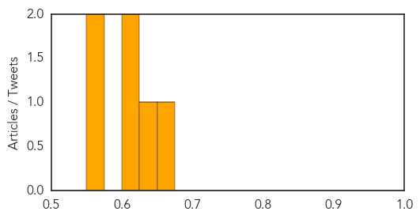
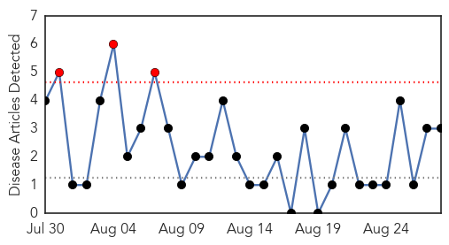
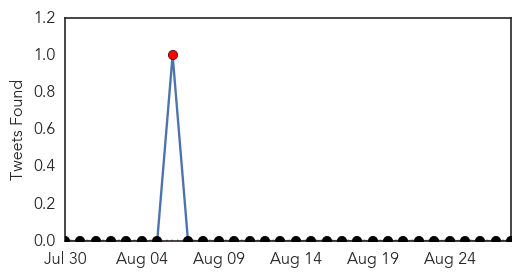
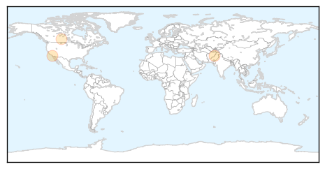

Hepatitis
30-Day Web Trend
0 alerts, 0 warnings

30-Day Twitter Trend
0 alerts, 0 warnings

Article Locations
Article Confidences
Top Articles:
- 0.658
- New Delaware hepatitis C campaign will target boomers, IV drug users
- 0.644
- AbbVie : Egyptian health ministry approves new hepatitis C drug
- 0.617
- Hepatitis C: A Silent Killer In The United States, Patients Limited Access To HCV Drugs
- 0.604
- Needle exchanges unlikely for Northwest Indiana
- 0.571
- Researchers identify new virus that plays role in rare type of liver cancer
- 0.565
- Ziagen Tablets (Abacavir) Drug
Top Tweets:
-
No tweets found for Aug 28, 2015
Pertussis
30-Day Web Trend
3 alerts, 0 warnings

30-Day Twitter Trend
1 alerts, 0 warnings

Article Locations
Article Confidences

Top Articles:
Top Tweets:
-
No tweets found for Aug 28, 2015